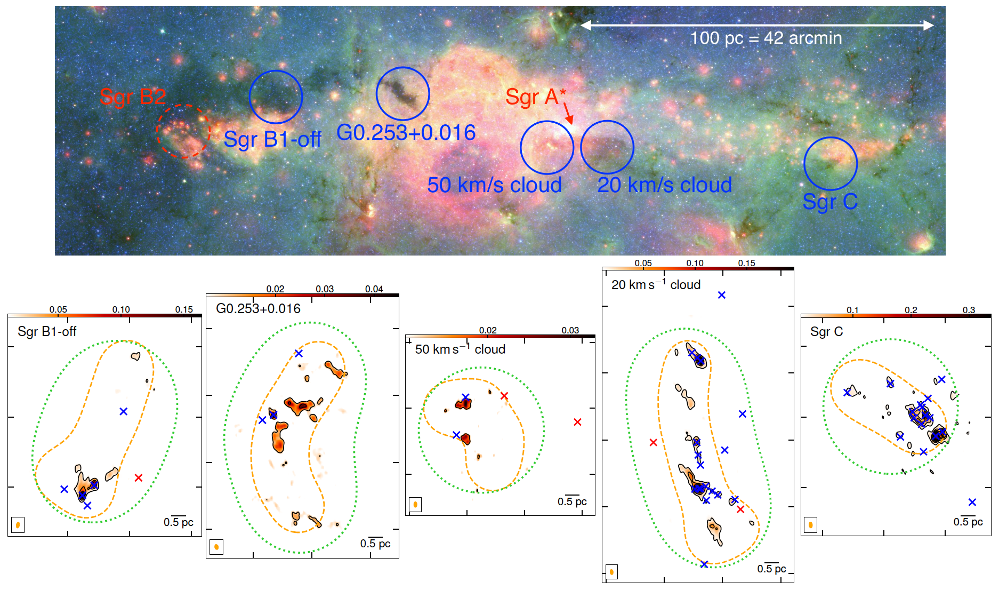
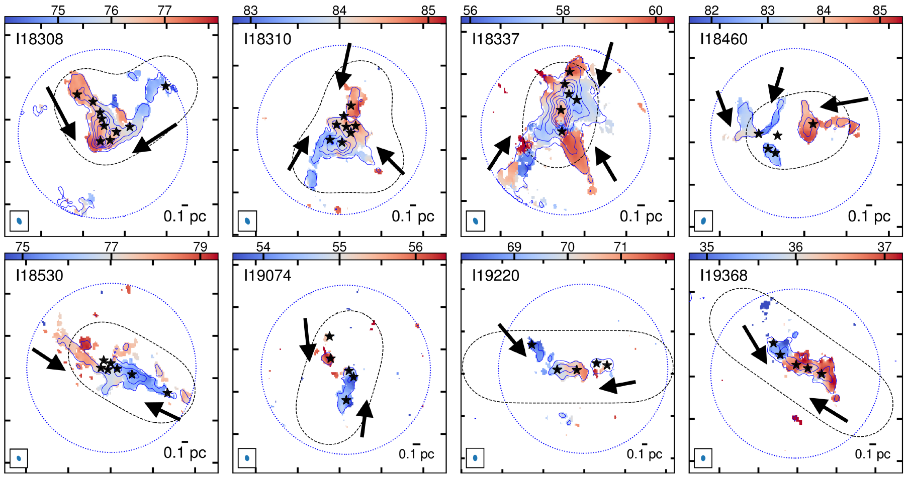

Selected Research Projects (as of Oct 2018)
There are two cornerstone findings in the last few decades in the study of star formation:
- The dense gas star formation relation: numerous observations suggest that the star formation rate (SFR) as traced by infrared luminosities or by counting young stellar objects and the amount of dense (above 104 cm-3) molecular gas follow a linear correlation, from the spatial scales of molecular clumps (~1 parsec) to galaxies (of >kilo-parsec) (Gao & Solomon 2004; Lada et al. 2012)
- The intial masss function (IMF) and the core mass function (CMF): IMF describes a distribution of stellar masses at their formation (Salpeter 1955; Kroupa 2001). Stars are suggested to be spawned in dense cores of <0.1 parsec scales embedded in molecular clouds, but the relation between the IMF and the CMF (distribution of core masses) is still under debate (Offner et al. 2014; Motte et al. 2018).
My research is closely tied to these two findings, with heavy reliance on interferometer observations from e.g. the Atacama Large Millimeter/submillimeter Array (ALMA), the Submillimeter Array (SMA), and the Very Large Array (VLA).
Does the Dense Gas Star Formation Relation Break in the CMZ?
The Central Molecular Zone (CMZ), the inner 500 pc of our Galaxy, contains large amount of molecular gas (>107 solar masses, mean density~104 cm-3). However, although there are a few star-forming clouds such as the well-known Sagittarius B2 cloud (Sgr B2 hereafter), the overall SFR of the CMZ and the SFRs of most CMZ clouds are estimated to be about 10 times lower than expected from the dense gas star formation relation (Longmore et al. 2013; Barnes et al. 2017; Kauffmann et al. 2017).
Using VLA and SMA observations, I characterized star formation in the embedded phase using H2O masers and free-free emission from ultra-compact (UC) HII regions toward five CMZ clouds (see the figure). These tracers cover a short time scale of 0.3 million years, hence are better physically coupled with the observed gas than star formation traced by infrared or diffuse free-free emission with typical time scales of >1 million years. I also included Sgr B2 in the sample using ALMA data from a co-author work (Ginsburg et al. 2018).
In Lu et al. (submitted), I developed a Monte-Carlo approach to estimate SFRs of the six clouds based on these star formation indicators. The main findings are:
- Evan after taking the very early phases of star formation into account, SFRs in four of the CMZ clouds are still 10 times lower than expected from the dense gas star formation relation, while Sgr B2 and Sgr C stand out with a good agreement with this relation.
- SFRs in these clouds are linearly correlated with masses confined in gravitationally bound cores of 0.2 parsec scales and ≥105 cm-3 densities. The inactive star formation in the four 'quiescent' clouds could be related to their low mass fractions (<1%) in gravitationally bound cores.
- The low gravitationally bound mass fractions may be a result of strong turbulence and/or early dynamical phases of clouds when collapse has just started. In the latter case the quiescent clouds may eventually evolve to active star forming regions like Sgr B2 and Sgr C.
The SMA Legacy Survey CMZoom
I have been involved in the SMA Legacy Survey CMZoom (PIs: C. Battersby & E. Keto), in which we observed all major clouds in the CMZ with the SMA. A summary paper will appear soon, stay tuned!
Do Gas Flows Along Filaments Feed Star Formation?
The IMF suggests a spectrum of stellar masses from <0.01 solar masses to >100 solar masses to be formed in dense cores of massive molecular clouds. However, it is still under debate how stars, especially high-mass (>8 solar masses) stars accumulate their masses. In particular, recent interferometer observations revealed dense cores of ≤10 solar masses in high-mass protoclusters (Zhang et al. 2015; Sanhueza et al. 2017). To form highmass stars, these cores must grow several times more massive assuming a core to star-formation efficiency of 30%-50% (Tan et al. 2014).
In Lu et al. (2018), I compiled a sample of eight targets selected from the survey in Lu et al. (2014), whose NH3 velocities all show apparent gradients along filamentary structures, suggesting potential gas flows. Then I studied their dense core population and highmass star formation using the SMA observations.
Possible signatures of gas flows into dense cores along filaments are found by using NH3 lines, implying accretion rates of ~104 solar masses per year. Typical core masses of 10–50 solar masses will be doubled in several free-fall time scales with such high accretion rates, which allow for the formation of high-mass stars in these dense cores.